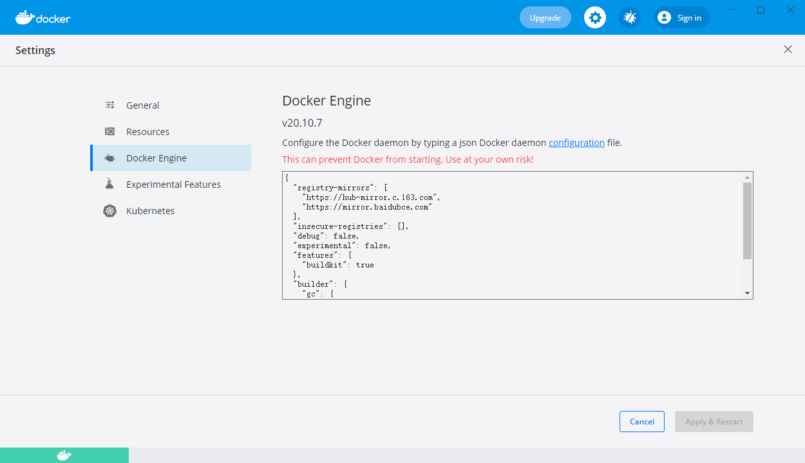
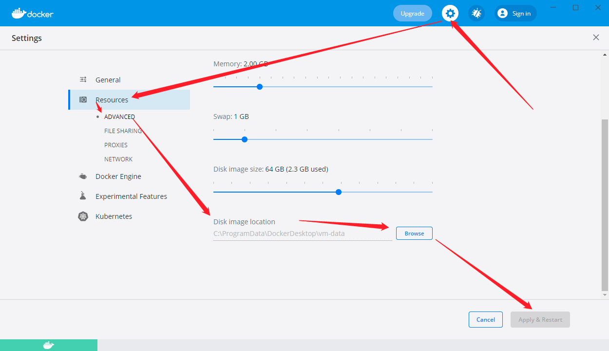
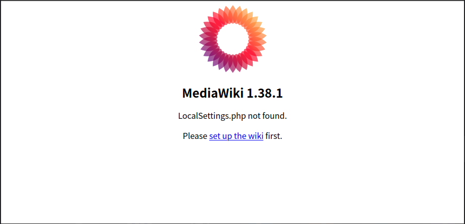
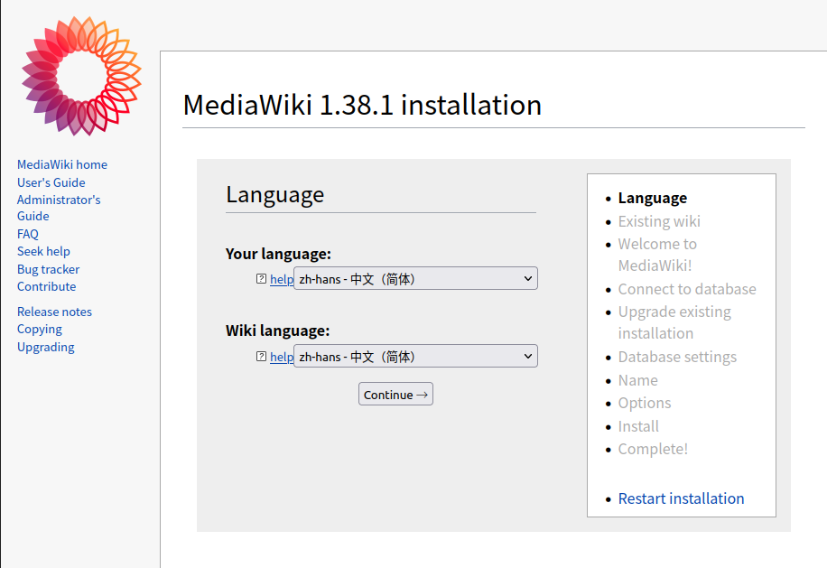
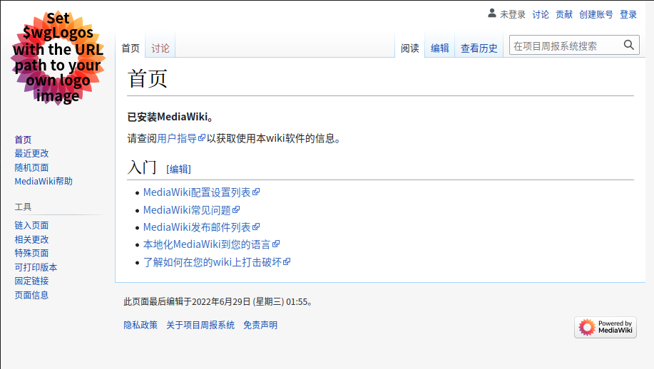

MediaWiki
MediaWiki安装
参考文档
docker desktop
下载对应版本的桌面版：https://www.docker.com/products/docker-desktop/
docker config

{
"registry-mirrors": [
"https://hub-mirror.c.163.com",
"https://mirror.baidubce.com"
],
"insecure-registries": [],
"debug": false,
"experimental": false,
"features": {
"buildkit": true
},
"builder": {
"gc": {
"enabled": true,
"defaultKeepStorage": "20GB"
}
}
}
查看配置生效shell: docker info
docker image

docker mediawiki
https://hub.docker.com/_/mediawiki
docker pull mysql:5.7
docker run –name mysql5.7 -p 3306:3306 -e MYSQL_ROOT_PASSWORD=123456 -d mysql:5.7
a8a65788b70aebcb08d1c7909d03503d6c61f015af0dcd80e2a3cab2d7e9d392MYSQL_ROOT_PASSWORD=123456表示生成的容器里的root账户密码是123456
开放3306端口
docker pull mediawiki
使用docker桌面版开启服务
只支持http，不支持https
http://zengjf.local/
选择语言中文
欢迎界面选择：继续
连接到数据库：
数据库主机：
宿主机IP，可以通过ifconfig查看，电脑IP要是更换了，暂时不知道怎么处理
192.168.137.2
root密码：123456
继续
设置wiki基本信息
下载LocalSettings
docker ps
CONTAINER ID IMAGE COMMAND CREATED STATUS PORTS NAMES a8a65788b70a mysql:5.7 "docker-entrypoint.s…" 18 minutes ago Up 18 minutes 0.0.0.0:3306->3306/tcp, 33060/tcp mysql5.7 1197ff86d4e9 mediawiki:latest "docker-php-entrypoi…" 41 minutes ago Up 41 minutes 0.0.0.0:80->80/tcp mediawiki
docker cp LocalSettings.php 1197ff86d4e9:/var/www/html
点击：进入您的wiki
